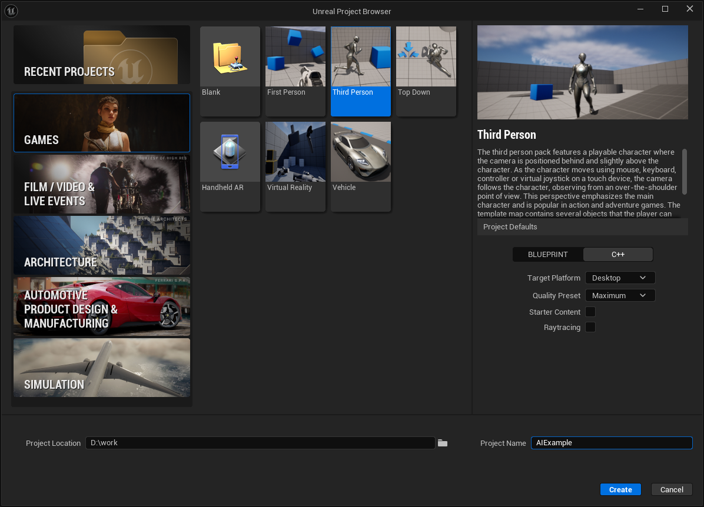
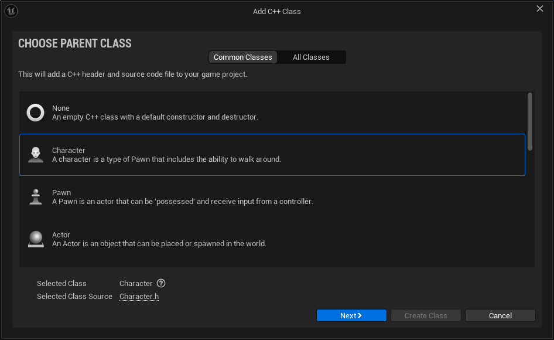
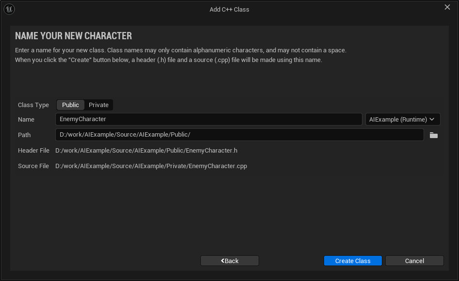
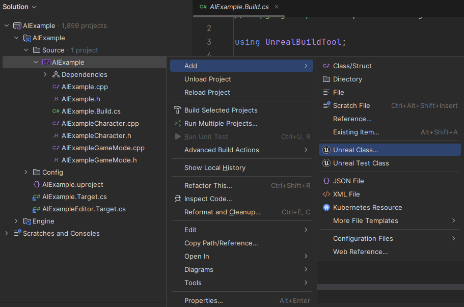
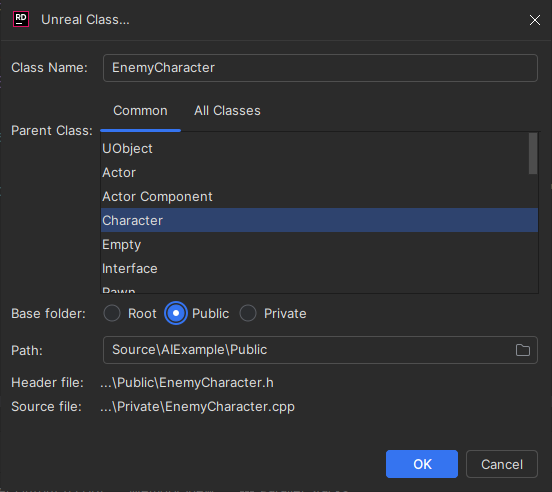
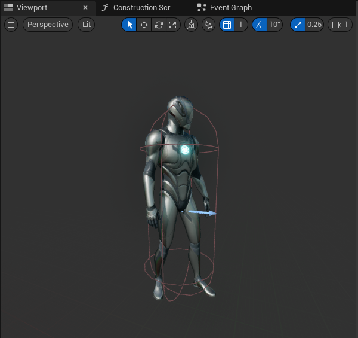
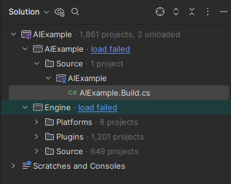
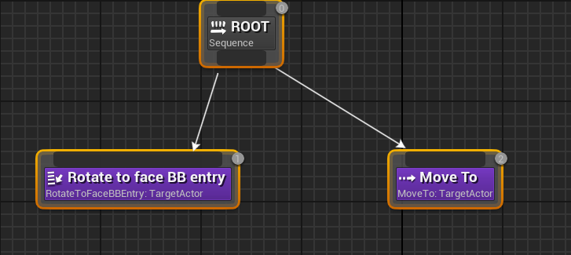
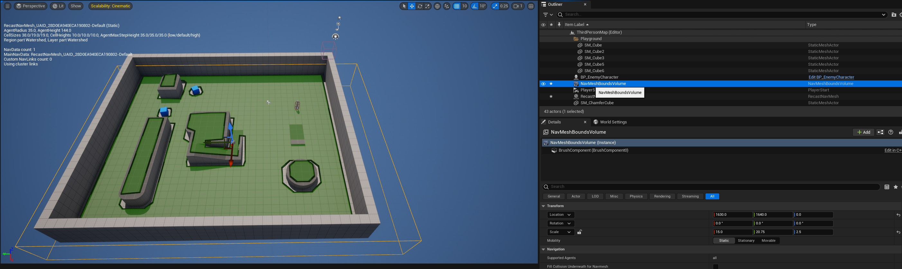

Making an AI Controller and Behavior Tree in C++
Unreal AI is implemented using three major components, namely:
- an AI controller which is an object which controls the actions of a non-player (i.e. enemy) actor
- a Behaviour Tree which is a structure which controls the actions of the enemy actor - it has a series of nodes and states which represent actions we want the enemy to do, and rules for transitioning between states
- a Blackboard object which has a number of named slots into which game logic writes values, such as the location of the target player, which are then read by the AI controller and the behavior tree.
In this article we make a simple project and then add C++ code to implement an AI controller and a Behaviour Tree.
The Project
The project we use here called "AIExample" is based on these options:

Adding an Enemy Character
Create a new C++ class called EnemyCharacter with the parent class ACharacter. This can be done either in the Unreal Editor or in your IDE.
Adding a C++ class from the Unreal Editor
In the Unreal Editor go to the folder /All/C++Classes/AIExample, right click and choose "New C++ Class". Choose the Character parent class like this:

Press Next and fill out the dialog like this:
Adding a C++ class from Rider
In Rider select the Add Unreal Class .. option from this menu:

and fill out the dialog like this:

Compile the project and run it. In the editor make a new folder in the content browser called All/Content/AIExample and in the folder create a blueprint called BP_EnemyCharacter with the parent class EnemyCharacter. Open BP_EnemyCharacter and set these properties:
| Property | Value | Notes |
|---|---|---|
| Location | 0,0,-80 | So the capsule aligns with the model as shown in the image below |
| Rotation | 0,0,-90 | So the model faces down the X axis as shown in the image below |
| Anim Class | ABP_Quinn_C | Choose "ABP_Quinn" from the dropdown, it will display as "ABP_Quinn_C" |
| Skeletal Mesh | SKM_Quinn | |
| Use Acceleration for Paths | true | Necessary for AI to use character animation |
What the capsule position and mesh direction should look like:

Compile and save BP_EnemyCharacter. Drop a BP_EnemyCharacter into the scene and press Play - it should stand there doing nothing.
Adding Enemy AI Controller
Create a new C++ class called EnemyAIController with parent class AAIController.
To use the AAIController parent class you need to add the "AIModule" to the AIExample.build.cs file:
- if you are using Visual Studio you will need to do this yourself
- if you are using Rider 2024.1.4 it will attempt to do this automatically and might fail horribly (as shown below), in which case you need to restart Rider and do it yourself:

With the AIModule added the AIExample.Build.cs should look like this:
using UnrealBuildTool;
public class AIExample : ModuleRules
{
public AIExample(ReadOnlyTargetRules Target) : base(Target)
{
PCHUsage = PCHUsageMode.UseExplicitOrSharedPCHs;
PublicDependencyModuleNames.AddRange(new string[] { "AIModule", "Core",
"CoreUObject", "Engine", "InputCore", "EnhancedInput" });
}
}
Open the EnemyAIController.h file and replace the contents with this:
#pragma once
#include "CoreMinimal.h"
#include "AIController.h"
#include "EnemyAIController.generated.h"
class UBehaviorTreeComponent;
class UBlackboardComponent;
class UBehaviorTree;
UCLASS()
class AIEXAMPLE_API AEnemyAIController : public AAIController
{
GENERATED_BODY()
public:
AEnemyAIController();
protected:
virtual void BeginPlay() override;
virtual void OnPossess(APawn* InPawn) override;
public:
// behaviour tree
UPROPERTY(EditAnywhere, BlueprintReadWrite, Category = "AI")
TObjectPtr<UBehaviorTreeComponent> BehaviorTreeComponent { nullptr };
// blackboard component, uses the blackboard owned by the behavior tree
UPROPERTY(VisibleAnywhere, BlueprintReadOnly, Category = "AI")
TObjectPtr<UBlackboardComponent> BlackboardComponent;
private:
UPROPERTY()
TObjectPtr<UBehaviorTree> BehaviorTree;
};
We added:
- forward declarations of the
UBehaviorTreeComponent,UBlackboardComponentandUBehaviorTreeclasses - a constructor
AEnemyAIController(), which is where we will create components - a
BeginPlay()method - an
OnPossess()call for initializing the AI components when the controller and the actor being controlled are both ready - a
BehaviorTreeComponentmember to hold our behavior tree component - a
BlackboardComponentmember to hold our blackboard component - a
BehaviorTreemember to hold our behaviour tree
Open the EnemyAIController.cpp file and replace the contents with this (each part of this is explained in detail below):
#include "EnemyAIController.h"
#include "BehaviorTree/BehaviorTree.h"
#include "BehaviorTree/BlackboardComponent.h"
#include "BehaviorTree/Blackboard/BlackboardKeyType_Vector.h"
#include "BehaviorTree/Composites/BTComposite_Sequence.h"
#include "BehaviorTree/Tasks/BTTask_MoveTo.h"
#include <BehaviorTree/Blackboard/BlackboardKeyType_Object.h>
#include "Kismet/GameplayStatics.h"
#include <BehaviorTree/Tasks/BTTask_RotateToFaceBBEntry.h>
namespace
{
const FName TargetActor{ TEXT("TargetActor") };
bool SetBlackboardKeySelectorProperty(
UObject * Target,
const FName& VarName,
const FBlackboardKeySelector& NewValue )
{
if (Target)
{
if (const FStructProperty* Prop = FindFieldChecked<FStructProperty>(Target->GetClass(), VarName ))
{
Prop->SetValue_InContainer( Target, &NewValue );
return true;
}
}
return false;
}
}
// Sets default values
AEnemyAIController::AEnemyAIController()
{
PrimaryActorTick.bCanEverTick = true;
// Initialize Blackboard and Behavior Tree Components
BlackboardComponent = CreateDefaultSubobject<UBlackboardComponent>(TEXT("BlackboardComponent"));
BehaviorTreeComponent = CreateDefaultSubobject<UBehaviorTreeComponent>(TEXT("BehaviorTreeComponent"));
}
// Called when the game starts or when spawned
void AEnemyAIController::BeginPlay()
{
Super::BeginPlay();
// populate the target so we move toward it
APawn* PlayerPawn = UGameplayStatics::GetPlayerPawn(GetWorld(), 0);
BlackboardComponent->SetValueAsObject(TargetActor, PlayerPawn);
}
void AEnemyAIController::OnPossess(APawn* InPawn)
{
Super::OnPossess(InPawn);
// allow overriding BehaviorTree for testing
if (!BehaviorTree)
{
BehaviorTree = NewObject<UBehaviorTree>(this, TEXT("BehaviorTree"));
BehaviorTree->BlackboardAsset = NewObject<UBlackboardData>(this, TEXT("BlackboardData"));
// Add keys to the Blackboard
FBlackboardEntry Entry;
Entry.EntryName = TargetActor;
Entry.KeyType = NewObject<UBlackboardKeyType_Object>(BehaviorTree->BlackboardAsset);
BehaviorTree->BlackboardAsset->Keys.Add(Entry);
// need to happen AFTER keys are added, this allocates memory for values
// to be held in when SetValue<> is called
BlackboardComponent->InitializeBlackboard( *BehaviorTree->BlackboardAsset );
// make a selector
FBlackboardKeySelector BlackboardKeySelector;
BlackboardKeySelector.SelectedKeyName = TargetActor;
BlackboardKeySelector.SelectedKeyType = UBlackboardKeyType_Object::StaticClass();
BlackboardKeySelector.ResolveSelectedKey( *BehaviorTree->BlackboardAsset );
check( static_cast<int32>(BlackboardKeySelector.GetSelectedKeyID() ) >= 0 );
check(BlackboardKeySelector.GetSelectedKeyID() != FBlackboard::InvalidKey );
// Create root node and moveto node
BehaviorTree->RootNode = NewObject<UBTComposite_Sequence>(BehaviorTree, TEXT("RootNode"));
UBTTask_RotateToFaceBBEntry* RotateToFaceNode =
NewObject<UBTTask_RotateToFaceBBEntry>(BehaviorTree->RootNode, TEXT("RotateToFace"));
SetBlackboardKeySelectorProperty(RotateToFaceNode, "BlackboardKey", BlackboardKeySelector);
UBTTask_MoveTo* MoveToTaskNode = NewObject<UBTTask_MoveTo>(BehaviorTree->RootNode, TEXT("MoveToTask"));
SetBlackboardKeySelectorProperty(MoveToTaskNode, "BlackboardKey", BlackboardKeySelector);
// connect into tree
BehaviorTree->RootNode->Children.Add({ .ChildTask = RotateToFaceNode } );
BehaviorTree->RootNode->Children.Add({ .ChildTask = MoveToTaskNode } );
RunBehaviorTree( BehaviorTree );
}
}
Creating Components
The constructor creates the blackboard and behavior tree components:
ASpawnEnemyAIController::ASpawnEnemyAIController()
{
PrimaryActorTick.bCanEverTick = true;
BlackboardComponent = CreateDefaultSubobject<UBlackboardComponent>(TEXT("BlackboardComponent"));
BehaviorTreeComponent = CreateDefaultSubobject<UBehaviorTreeComponent>(TEXT("BehaviorTreeComponent"));
}
The OnPossess() function
This is called when the EnemyAIController possesses the EnemyCharacter, which is when the AI starts controlling the character.
Creating Behavior Tree and Blackboard objects
These lines create the behavior tree and the blackboard:
BehaviorTree = NewObject<UBehaviorTree>(this, TEXT("BehaviorTree"));
BehaviorTree->BlackboardAsset = NewObject<UBlackboardData>(this, TEXT("BlackboardData"));
Creating a Blackboard Key
Conceptually the blackboard has a collection of slots each of which is identified by a key. This key is used both to write items to the blackboard and to read them.
These lines add a key called "TargetActor" to the blackboard and associate it with AActor* data. This means we can write AActor pointers to the blackboard using this key and then the behavior tree nodes can read them to see where the target is located, for example to determine where they should be facing or moving to.
FBlackboardEntry Entry;
Entry.EntryName = TargetActor;
Entry.KeyType = NewObject<UBlackboardKeyType_Object>(BehaviorTree->BlackboardAsset);
BehaviorTree->BlackboardAsset->Keys.Add(Entry);
Initializing the Blackboard
The line below initializes the blackboard. This allocates memory within the blackboard which will be used to store values written to the blackboard. It uses the keys which were previously added, like the TargetActor key added above. It is crucial this happens after the keys are added. If you do this before all keys are added, or don't call it at all, you won't see any error but saving values to the blackboard will fail.
BlackboardComponent->InitializeBlackboard( *BehaviorTree->BlackboardAsset );
Creating a KeySelector
A FBlackboardKeySelector is a struct which is a kind of reference to an existing blackboard key, used when writing item to the blackboard or retrieving them.
This code creates a FBlackboardKeySelector:
FBlackboardKeySelector BlackboardKeySelector;
BlackboardKeySelector.SelectedKeyName = TargetActor;
BlackboardKeySelector.SelectedKeyType = UBlackboardKeyType_Object::StaticClass();
BlackboardKeySelector.ResolveSelectedKey( *BehaviorTree->BlackboardAsset );
check( static_cast<int32>(BlackboardKeySelector.GetSelectedKeyID() ) >= 0 );
check(BlackboardKeySelector.GetSelectedKeyID() != FBlackboard::InvalidKey );
The BlackboardKeySelector.SelectedKeyName should match an existing key, here we use the "TargetActor" string we used
when creating the key above.
The BlackboardKeySelector.SelectedKeyType is the data type we want to write or read, here we use the UBlackboardKeyType_Object
to match the AActor* we used when we created the key:
Entry.KeyType = NewObject<UBlackboardKeyType_Object>(BehaviorTree->BlackboardAsset);
This line is crucial:
BlackboardKey.ResolveSelectedKey( *BehaviorTree->BlackboardAsset );
What it does is:
- look at the keys which exist in the blackboard and find the one which has the key name "TargetActor"
- set the SelectedKeyID property of the FBlackboardKeySelector to the number of the found key
If the key is not found, or you forget to ResolveSelectedKey(), subsequent uses of that FBlackboardKeySelector
will fail.
Creating the Nodes in the Behavior Tree
We are creating 3 nodes, a root node, a rotateTo node, and a moveTo node. If these were created manually in the behaviour tree editor they would look like this:

These lines create the three nodes:
BehaviorTree->RootNode = NewObject<UBTComposite_Sequence>(BehaviorTree, TEXT("RootNode"));
UBTTask_RotateToFaceBBEntry* RotateToFaceNode =
NewObject<UBTTask_RotateToFaceBBEntry>(BehaviorTree->RootNode, TEXT("RotateToFace"));
UBTTask_MoveTo* MoveToTask =
NewObject<UBTTask_MoveTo>(BehaviorTree->RootNode, TEXT("MoveToTask"));
The MoveTo task is of type UBTTask_MoveTo and inherits a property called BlackboardKey from its parent
UBTTask_BlackboardBase. If we look at the implementation of UBTTask_MoveTo::PerformMoveTask() we see this code:
if (BlackboardKey.SelectedKeyType == UBlackboardKeyType_Object::StaticClass())
{
UObject* KeyValue = MyBlackboard->GetValue<UBlackboardKeyType_Object>(BlackboardKey.GetSelectedKeyID());
AActor* TargetActor = Cast<AActor>(KeyValue);
if (TargetActor)
{
if (bTrackMovingGoal)
{
MoveReq.SetGoalActor(TargetActor);
}
else
{
MoveReq.SetGoalLocation(TargetActor->GetActorLocation());
}
}
...
}
What this does is use the value of the BlackboardKey member variable of the UBTTask_MoveTo to get the target actor
from the blackboard and then tell the controlled actor to move to that location of the target actor.
The BlackboardKey
of the UBTTask_MoveTo has to
be the same one we used when we wrote the target actor to the blackboard - both writing and reading
the actor need to use the same key. So we need to set the value of BlackboardKey member variable on the MoveToTask
we just created. The BlackboardKey is declared like this in UBTTask_BlackboardBase:
protected:
UPROPERTY(EditAnywhere, Category=Blackboard)
struct FBlackboardKeySelector BlackboardKey;
It is protected so we can't set it the member variable directly, but we can set it using Unreals property setting methods, which is what this line does:
SetBlackboardKeySelectorProperty( MoveToTask, "BlackboardKey", BlackboardKey );
This line calls some code at the top of the .cpp file, specifically this:
namespace
{
bool SetBlackboardKeySelectorProperty( UObject * Target, FName VarName, FBlackboardKeySelector NewValue )
{
if (Target)
{
const FStructProperty* Prop = FindFieldChecked<FStructProperty>(Target->GetClass(), VarName );
if (Prop)
{
Prop->SetValue_InContainer( Target, &NewValue );
return true;
}
}
return false;
}
}
This looks at the MoveToTask object, find a struct property called "BlackboardKey" and sets its value.
Given that the BlackboardKey is protected an alternative approach would be to make our own custom MoveToTask
class which derives from UBTTask_MoveTo. Either approach is valid.
Once the three nodes are created we use this code to connect the MoveToTask and UBTTask_RotateToFaceBBEntry nodes as children of the root node:
BehaviorTree->RootNode->Children.Add({ .ChildTask = RotateToFaceNode } );
BehaviorTree->RootNode->Children.Add({ .ChildTask = MoveToTaskNode } );
Once that is done we just need to start the behavior tree running with this line:
RunBehaviorTree( BehaviorTree );
Giving the AI a target
We added this code to AEnemyAIController::BeginPlay():
APawn* PlayerPawn = UGameplayStatics::GetPlayerPawn(GetWorld(), 0);
BlackboardComponent->SetValueAsObject(TargetActor, PlayerPawn);
This gets a pointer to the player character and writes it to the blackboard so when the behaviour tree executes it will know what target to pursue.
Using the EnemyAIController
To use of the new AI controller we make the following changes to EnemyCharacter.cpp
- Add an include file
#include "EnemyAIController.h"
- Set the AI controller class to our
EnemyAIControllerso when we callSpawnDefaultController()we get the type of controller we want
AEnemyCharacter::AEnemyCharacter()
{
PrimaryActorTick.bCanEverTick = true;
AIControllerClass = AEnemyAIController::StaticClass();
}
The changes mean that when AEnemyCharacter::BeginPlay() is called it will create an instance of our AEnemyAIController
which will then possess that enemy character and control its motion from then on.
Adding a NavMesh Bounds Volume
The Unreal AI code uses a NavMeshBoundsVolume to calculate where an AI controlled character is allowed to move on the map. The Third Person game example does not come with a NavMeshBoundsVolume so we need to add one.
To do this drag a NavMeshBoundsVolume from the Place Actors panel and drop it onto the map. Resize it and center it so that it covers the entire map floor and has sufficient height to encase the floor vertically.
Pressing P in the viewport should show the areas which the AI can navigate to in green, as shown in this picture:

Testing
The code above together with the NavMeshBoundsVolume should be enough to get the enemy character following the player character around the map.
If it does not move at all, check that the navmesh appears when you press P, and that the enemy character is spawned on the navmesh. If it is not on the area covered by the navmesh it will not move.
If the character moves but does not animate, but just slides, check that the "Use Acceleration for Paths" property is checked on the enemy character.
Source code
The project can be downloaded from https://github.com/UnrealCodeDotNet/AIExample/
Reference
Feedback
Please leave any feedback about this article here